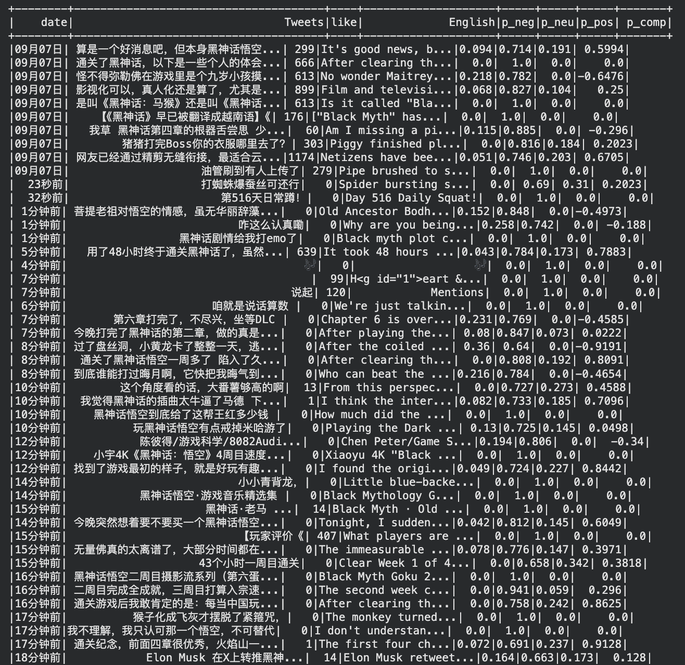

Social Media Sentiment Analysis Project
End-to-end pipeline that collects, translates, and analyzes Chinese social media posts using English sentiment models.
Built a scalable crawler to ingest trending content, applied bilingual normalization, then ran sentiment inference with English transformers on translated corpora. Visualizations highlight distribution shifts in public opinion for the game Black Myth: Wukong.

